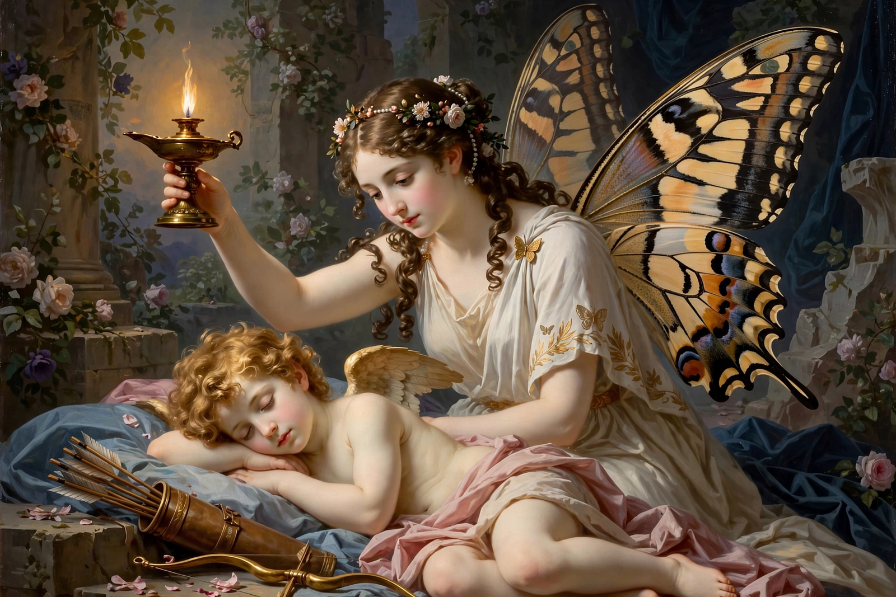

| Consort | Eros (Cupid) |
|---|---|
| Children | Hedone (Voluptas) |
| Symbol | Butterfly wings |
| Source | Apuleius, Metamorphoses (The Golden Ass), Books 4–6 |

Psyche (Greek: Ψυχή, "soul" or "butterfly") is the heroine of the tale of Cupid and Psyche, preserved in Apuleius's Latin novel Metamorphoses (2nd century CE). A mortal princess of surpassing beauty, she becomes the bride of Eros, loses him through a forbidden act of curiosity, and wins him back by completing a series of impossible tasks, finally attaining immortality as a goddess.
Psyche's beauty drew worship away from Aphrodite, who ordered her son Eros to make the girl fall in love with a monster; instead Eros wounded himself with his own arrow and loved her. An oracle decreed Psyche be wed to a creature on a mountaintop; the west wind Zephyrus carried her to a palace where an unseen husband visited her only by night. Urged by her jealous sisters, she lit a lamp to look at him; a drop of oil woke Eros, who fled. Searching for him, Psyche was set four tasks by Aphrodite: sorting a heap of mixed grains (aided by ants), gathering golden wool, filling a flask from the river Styx (aided by Zeus's eagle), and descending to the underworld to fetch a box of Persephone's beauty. Opening the box, she fell into a deathlike sleep; Eros revived her, and Zeus granted her immortality. Their child was Hedone, Pleasure.
The tale is the most famous literary fairy tale from antiquity and an allegory of the soul (psyche) purified through suffering and united with love. In art Psyche is shown with butterfly wings, as in Canova's sculpture Psyche Revived by Cupid's Kiss.
See also: Pygmalion · Charites · Praxiteles